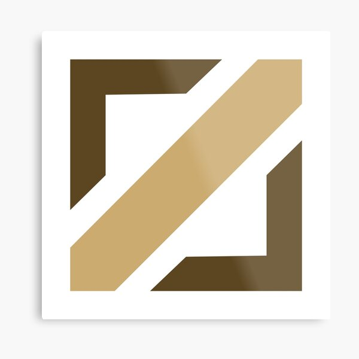
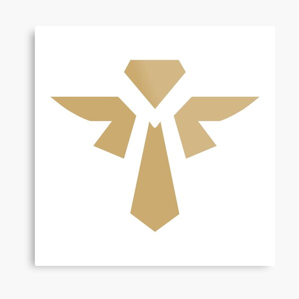

the top lane is as the name implies at the top of the map and is a solo lane in other words only 1 champion from each team goes to this lane it is near the rift herald/baron and usually brandishes the Juggernaut sub-class , Skirmisher sub-class and Vanguards.
Jungle
the jungler is player whose territory is the jungle between lanes and their role is to either secure a lead them selves help their teammates secure a lead and get map objectives like rift herald and the elemental drakes and this is the only role that has atleast a single champion from each class.
Mid Lane
 the midlaner is one of the two carries for the team the other being the marksman since they are in the middle of the map its easier for them to react to fights or move out of their lane to help teammates also known as roaming and usually the champions in this lane are terrifying when they get a lead mages and assassins have an affnity for this role as they have the strong enough firepower to win fights all on their own.
Attack Damage Carry (ADC)
the Attack Damage Carry or ADC is the other carry role in the team they usually go to the botlane accompanied by a support and the role consists of only marksman although mages crash the party from time to time this role heavily focuses on 2 vs 2 and as such requires more team play in order to win it.
Support
 the Support or Supp as the name implies is the support role and gives aid to the rest of their team and dont rely as much on gold at first they can only support the marksman through the early stages of the match but later on become able to provide support to their entire team thanks to their high base values on abilites and their cheap items this roles consists of mostly the Controller class and the Tank Class although in recent years more carry oriented support have been added.

 the top lane is as the name implies at the top of the map and is a solo lane in other words only 1 champion from each team goes to this lane it is near the rift herald/baron and usually brandishes the Juggernaut sub-class , Skirmisher sub-class and Vanguards.
the top lane is as the name implies at the top of the map and is a solo lane in other words only 1 champion from each team goes to this lane it is near the rift herald/baron and usually brandishes the Juggernaut sub-class , Skirmisher sub-class and Vanguards.
 the jungler is player whose territory is the jungle between lanes and their role is to either secure a lead them selves help their teammates secure a lead and get map objectives like rift herald and the elemental drakes and this is the only role that has atleast a single champion from each class.
the jungler is player whose territory is the jungle between lanes and their role is to either secure a lead them selves help their teammates secure a lead and get map objectives like rift herald and the elemental drakes and this is the only role that has atleast a single champion from each class.